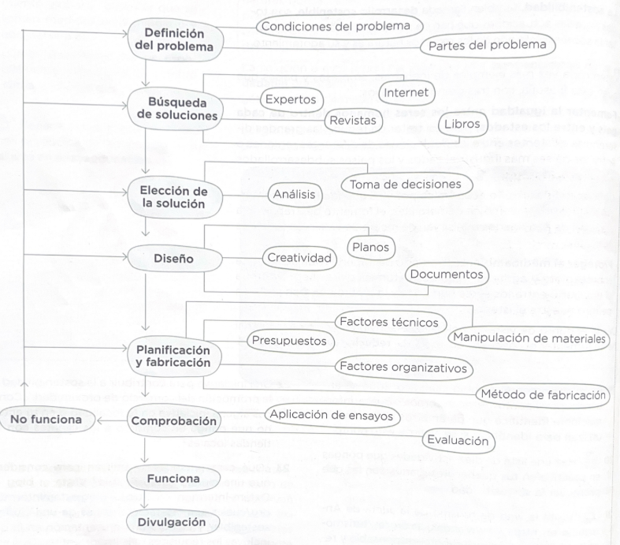

Introducción al método de proyectos
Introducción
El método de proyectos es una estrategia pedagógica que permite aprender haciendo. En lugar de memorizar teoría, el alumnado se enfrenta a un problema real o simulado y debe planificar, ejecutar y evaluar una solución. Esta sesión presenta las fases del método y su aplicación en el ámbito tecnológico.

¿Qué es el método de proyectos?
El método de proyectos es un enfoque de aprendizaje en el que los alumnos trabajan de forma autónoma o en equipo para resolver un problema o responder a una pregunta compleja a lo largo de un período de tiempo determinado. Sus características principales son:
- Aprendizaje activo: El alumnado es protagonista de su propio aprendizaje.
- Enfoque real: Los problemas planteados tienen conexión con situaciones reales.
- Trabajo colaborativo: Fomenta la cooperación y la comunicación entre iguales.
- Autonomía: Los alumnos toman decisiones sobre cómo abordar el problema.
- Producto final: El proyecto concluye con un producto o presentación tangible.
Las 5 fases del método de proyectos
1. Identificación del problema
Definir con claridad qué problema se va a resolver, quién se ve afectado y por qué es importante. Se formula una pregunta de investigación o un reto concreto.
2. Investigación y recopilación de información
Buscar y analizar información relevante: fuentes documentales, entrevistas, encuestas, observación directa. Comprender el contexto del problema.
3. Planificación y diseño de la solución
Definir los pasos a seguir, los recursos necesarios, los plazos y los responsables. Diseñar la solución antes de implementarla.
4. Ejecución
Poner en marcha el plan, crear el producto, desarrollar la solución. Registrar el proceso y los problemas encontrados.
5. Evaluación y presentación
Valorar los resultados obtenidos, comparar con los objetivos iniciales, reflexionar sobre lo aprendido y presentar el proyecto al grupo.
Actividad: Primer proyecto
En grupos de 3-4 alumnos, identificar un problema cotidiano del instituto que se pueda resolver con tecnología. Definir:
- ¿Cuál es el problema? ¿A quién afecta?
- ¿Qué información necesitas para entenderlo mejor?
- ¿Cuál sería una posible solución tecnológica?
- ¿Qué materiales y herramientas necesitarías?
- ¿En cuánto tiempo podrías tener una solución?